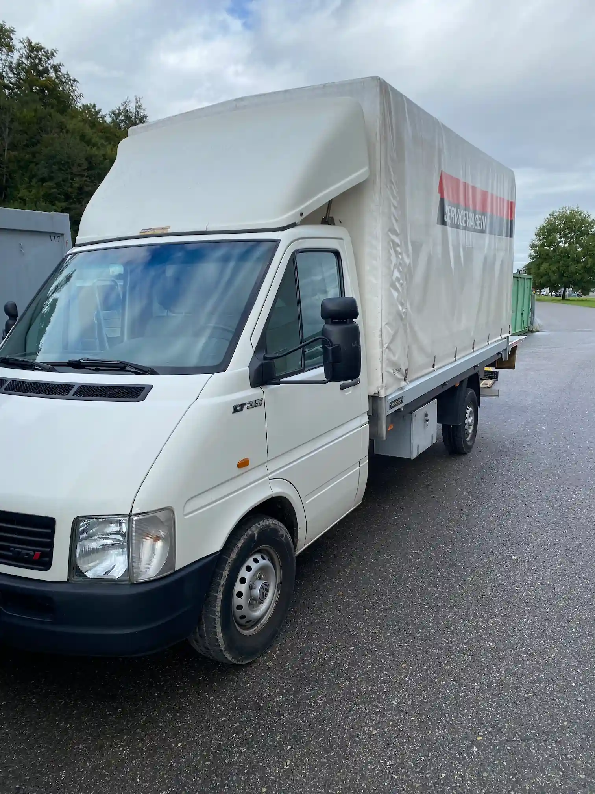

- Glas (Grün, Braun, Weiss)
- Alu-/Blechdosen
- PET-Flaschen
- Karton
- Altpapier/Bücher
- Altmetalle
- Aluminium
- Batterien
- Autobatterien
- Elektronikgeräte
- Haushaltsgeräte
- Druckertoner
- Leuchtmittel
- Alu-Kaffeekapseln
- Speiseöl
SAMMELSTELLE
ENTSORGUNG IN 6247 SCHÖTZ
Die Sammelstelle für alle Fälle
Haben Sie Abfälle, die Sie umweltgerecht entsorgen möchten? Unsere Sammelstelle in Schötz bietet Ihnen die ideale
Lösung. Ob Grünabfälle, Sperrgut, Bauabfälle oder Altmetall – bei uns entsorgen Sie verschiedenste Materialien schnell
und fachgerecht.
Wir sorgen mit klaren Abläufen und freundlichem Personal für eine unkomplizierte Entsorgung.
Nachhaltigkeit und korrektes Recycling stehen dabei für uns an erster Stelle.
MATERIALIEN & GEBÜHREN
- Sperrgut
- Altholz
- Bauschutt
- Boiler
- Altpneus
- Flachglas
- Farben/Lacke
- Motorenöl
- Kunststoff Sammelsack
Abholservice
Wir freuen uns, Ihnen unseren neuen 3,5-Tonnen-Abholservice-Bus vorzustellen! Ab sofort bieten wir die Abholung von jeglichen Abfällen an – schnell, flexibel und zuverlässig. Egal ob Sperrmüll, Grünschnitt oder sonstige Entsorgungen, wir sind für Sie da. Unser Ziel ist es, Ihnen den Transport und die Entsorgung so einfach wie möglich zu machen. Kontaktieren Sie uns noch heute, um einen Termin zu vereinbaren!



Auch auf einem Sammelhof macht freundliches Personal den Unterschied. Und das ist hier ganz besonders ausgeprägt - Bravo!
Marc Zingg, Nutzer der Öffentlichen Sammelstelle

Dass ich mal eine Sammelstelle bewerte… Aber: Die Mitarbeitenden sind tatsächlich unglaublich freundlich!
Nico, Nutzer der Öffentlichen Sammelstelle